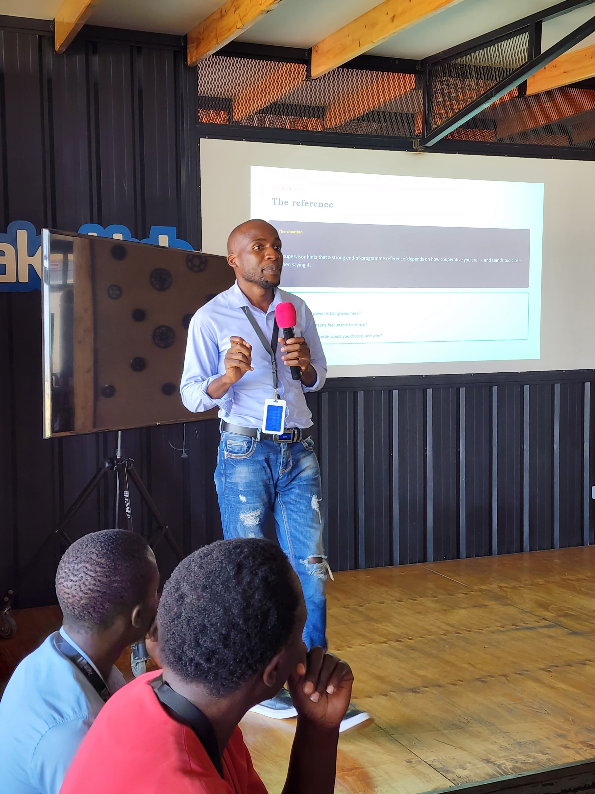

Ian Ochieng Talo
Backend Software Engineer & Open Source Contributor
Focused on high-performance backend microservices, resilient containerized systems, and decentralized open-source protocols (Bitcoin / Nostr). Driven by robust concurrency patterns, clean architecture, and Linux environments.
Concurrent programming in Go, distributed transaction systems, microservices architecture, and Linux systems administration.
Research and implementation of Bitcoin protocol tools, Signet integrations, and cryptographic signature verification.
Minimal multi-stage OCI containerization, systemd daemon management, and automated CI/CD validation pipelines.

Explore my projects
Browse my software projects, including backend systems, Go applications, developer tools and open-source work.
Interested in collaborating or discussing an opportunity?
Available for backend engineering roles, open-source protocol research, and infrastructure projects.